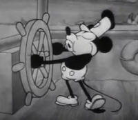
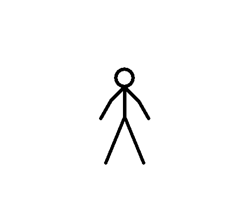
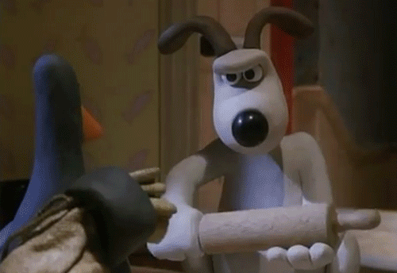
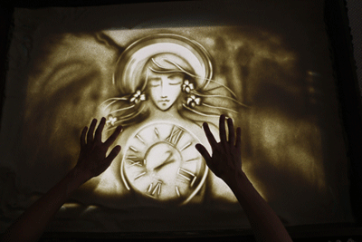
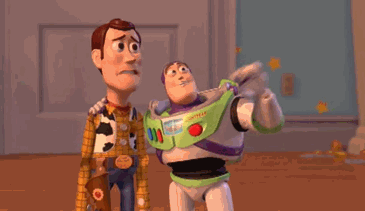

Рисованная анимация
Классический вид анимации, при котором художник последовательно прорисовывает на листах
бумаги или на прозрачной плёнке каждую фазу движения персонажа (производит «фазовку»),
затем каждый рисунок фотографируется, а из получившихся кадров составляется мультфильм.
Несколько прозрачных листов пленки с разными персонажами, объектами и фоном могут накладываться
друг на друга, образуя слои изображения и облегчая тем самым фазовку, так как объекты и фон
могут сдвигаться отдельно, а неподвижные объекты переходить из кадра в кадр без перерисовки.
Компьютерные программы с 1980-х годов также используются для компоновки кадров из разных изображений.
Flash-анимация
Flash — широко известная компьютерная программа компании Adobe для создания рисованной двухмерной анимации,
значительно облегчающая фазовку. Мультфильмы, созданные Flash-анимацией обычно легко узнаваемы из-за
ограниченного набора фазовых трансформаций, предлагаемых этой компьютерной программой, по сравнению
с более традиционной прорисовкой.

Кукольная анимация
Кукольная анимация — анимация при помощи кукол-актёров и сцены-макета. Сцена фотографируется покадрово,
после каждого кадра в сцену вносятся минимальные изменения, например, изменяется поза куклы. При воспроизведении
полученной последовательности кадров возникает иллюзия движения объектов. Этот тип мультипликации впервые
возник в России в 1906 году. Первым русским мультипликатором (1906 год) был Александр Ширяев,
балетмейстер Мариинского театра, создавший первый в мире отечественный кукольный мультфильм, в котором
изображены 12 танцующих фигурок на фоне неподвижных декораций, изображающих сцену. Фильм снят
на 17,5-миллиметровую плёнку. Время по его созданию заняло три месяца.
Пластилиновая анимация
Пластилиновая анимация — вид мультипликации, где фильм изготовляется путём покадровой съёмки
пластилиновых объектов, с их модификацией в промежутках между снятыми кадрами.


Песочная анимация
Песочная анимация — в ней лёгкий порошок (обычно очищенный и просеянный песок, но также соль,
кофе, пластиковые гранулы и т. п.) тонкими слоями наносится на стекло и перемешивается, создавая движущуюся картину.
Обычно все действия выполняются руками, но в качестве приспособлений могут использоваться и кисточки. С помощью
диапроектора или световой доски получающееся изображение можно передавать на экран и записывать.
Компьютерная анимация
Трёхмерная компьютерная анимация — вид анимации, производный от компьютерной графики.
На сегодняшний день компьютерная анимация имеет очень широкое применение как в области развлечений,
так и в производственной, научной и деловой сферах. В трехмерной компьютерной анимации работа ведется
не с нарисованным контентом, а с настоящим виртуальным миром. Объекты не рисуются, а моделируются,
— это процесс скорее похож на работу гончара, лепящего из простых форм более сложные. Внутри программы
есть виртуальное освещение, материалы, законы физики и т. д. Правильно настроив их, можно добиться
нужного результата — будь то мультяшная картинка или реалистичное изображение.
